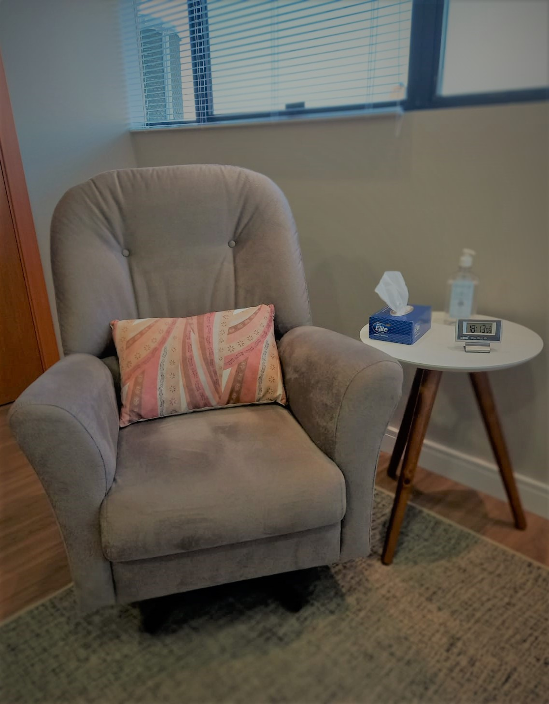

Psicoterapia
Psicoterapia é o tratamento realizado pelo psicólogo e tem como objetivo auxiliar a compreender melhor o que se passa em sua vida, enfrentar suas dificuldades, mudar hábitos, comportamentos, formas de relacionamento, entre outras questões. É indicado quando você está com algum tipo de sofrimento, dificuldade ou conflito.
Utilizo a abordagem psicanalítica que parte do entendimento que somos sujeitos acompanhados por uma história de vida (passada e atual) e atravessados por nosso inconsciente.